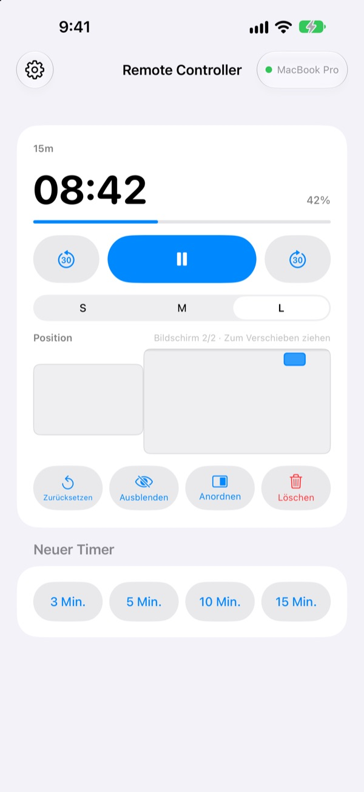
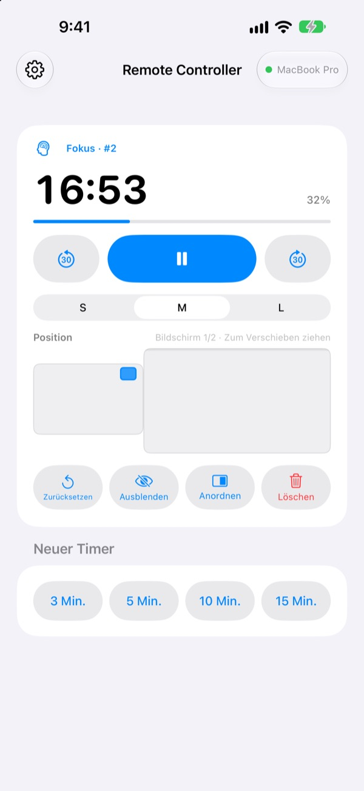
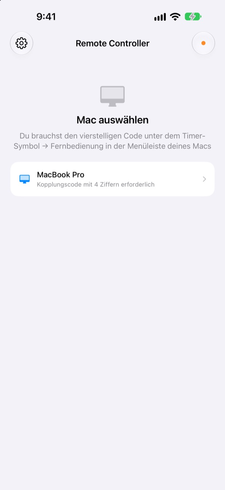

Der Mac bleibt hinten.
Der Timer ist in deiner Hand.
Steuere die Timer von StickyPresenter auf deinem Mac mit dem iPhone. Du stehst vorne im Raum und siehst trotzdem die Restzeit, pausierst, gibst 30 Sekunden dazu oder schiebst den Timer von dem Diagramm, das er gerade verdeckt.
Kostenlos · Ab iOS 17 · Braucht einen Mac mit StickyPresenter im selben WLAN.

Läufst du noch zum Laptop, nur um den Timer zu bedienen?
Dein Vortrag dauert länger und du brauchst mehr Zeit. Der Timer sitzt genau auf deinem wichtigsten Diagramm. Bisher hieß das: quer über die Bühne gehen und vor allen zum Trackpad greifen. Mit Remote Controller bleibst du stehen und tippst einmal aufs iPhone.
Restzeit sehen und sofort nachjustieren
Restzeit und Fortschritt aktualisieren sich jede Sekunde. Beim Pomodoro siehst du außerdem, ob gerade Fokus oder Pause läuft und in welchem Zyklus du bist.
Du überziehst? 30 Sekunden dazu. Du bist früher fertig? 30 Sekunden weg. Ein neuer Timer mit 3, 5, 10 oder 15 Minuten startet mit einem Tippen, und mit S, M oder L stellst du das Widget so groß, dass es auch die letzte Reihe lesen kann.

Einmal den Code eingeben, fertig
Öffne die App, und jeder Mac in deinem WLAN, auf dem StickyPresenter läuft, erscheint in einer Liste. Wähle deinen aus und gib den vierstelligen Code ein, den du in der Menüleiste des Macs unter Timer-Symbol ▸ Fernbedienung findest.
Ab dann verbindet sich die App bei jedem Öffnen von selbst mit diesem Mac. Kein Konto, kein Server: Die beiden Geräte sprechen direkt über dein lokales Netzwerk miteinander.

In drei Schritten startklar
- 1
StickyPresenter auf dem Mac öffnen
Sobald das Timer-Symbol in der Menüleiste zu sehen ist, kann es losgehen. Die App bleibt dort, auch wenn du alle Fenster schließt.
- 2
Die App im selben WLAN öffnen
Fragt sie nach Zugriff auf das lokale Netzwerk, tippe auf „Erlauben“. Nur so findet sie deinen Mac.
- 3
Mac wählen und Code eingeben
Gib den vierstelligen Kopplungscode ein, der in der Menüleiste des Macs unter Timer-Symbol ▸ Fernbedienung steht, und schon hast du die Kontrolle.
Das steuerst du vom iPhone aus
- Verbleibende Zeit
- Restzeit, Fortschritt, Pomodoro-Phase Fokus oder Pause und die Zyklusnummer, jede Sekunde aktuell
- Start · Pause
- Ein großer Knopf in der Mitte
- −30 s · +30 s
- Die Knöpfe links und rechts ändern einen laufenden Timer sofort
- Neuer Timer
- 3, 5, 10 oder 15 Minuten
- Widget-Größe
- Widget in S, M oder L
- Position
- Auf einer Miniatur deiner Mac-Bildschirmanordnung ziehen, sogar hinüber auf ein zweites Display
- Ausblenden
- Das Widget kurz vor dem Publikum verstecken
- Anordnen
- Ein verlorenes Widget zurück neben das Timer-Fenster holen
- Zurücksetzen · Löschen
- Den Timer neu starten oder entfernen
- Kurzbefehle · Siri
- Sag
Starte einen Timer mit Remote Controller, und auf deinem Mac läuft ein Timer
Die Fernbedienung steuert nur Timer, die auf deinem Mac laufen. Haftnotizen und Teleprompter-Skripte werden nie an das iPhone gesendet, und Folien blättert sie nicht weiter.
Fragen
Kann ich die iPhone-App allein benutzen?
Nein. Remote Controller ist die Fernbedienung für StickyPresenter auf dem Mac. StickyPresenter muss also auf einem Mac im selben WLAN laufen. Die Mac-App bekommst du über den Link unten oder in den Einstellungen der App unter „Mac-App laden“.
Mein Mac taucht nicht in der Liste auf.
Erscheint nach 10 Sekunden kein Mac, zeigt die App eine Checkliste. Geh sie von oben nach unten durch: StickyPresenter läuft auf dem Mac (das Timer-Symbol ist in der Menüleiste zu sehen), beide Geräte sind im selben WLAN (ein Gast-WLAN funktioniert nicht), Remote Controller ist auf dem iPhone unter Einstellungen ▸ Datenschutz & Sicherheit ▸ Lokales Netzwerk aktiviert, StickyPresenter ist auf dem Mac unter Systemeinstellungen ▸ Datenschutz & Sicherheit ▸ Lokales Netzwerk erlaubt, und ein VPN ist ausgeschaltet.
Die App meldet einen falschen Kopplungscode.
Gib die vier Ziffern ein, die gerade in der Menüleiste des Macs unter Timer-Symbol ▸ Fernbedienung stehen. Hat jemand am Mac auf „Neuer Kopplungscode“ geklickt, gilt nur noch der neue Code.
Die App meldet, dass der Mac dieses iPhone nicht mehr kennt.
Das passiert nach „Gekoppelte Fernbedienungen entfernen“ am Mac oder nachdem StickyPresenter neu installiert wurde. Tippe in der Liste auf den Mac und gib den Kopplungscode noch einmal ein.
Die App meldet, dass der Mac nicht antwortet.
Prüfe, ob der Mac nicht im Ruhezustand ist, beide Geräte im selben WLAN sind und kein VPN aktiv ist.
Die App meldet, dass die Mac-App aktualisiert werden muss.
StickyPresenter auf deinem Mac ist älter als die Fernbedienung. Aktualisiere es im Mac App Store und wähle den Mac danach erneut aus.
Ist das sicher in einem Besprechungsraum voller Macs?
Ja. Die Fernbedienung spricht nur mit dem einen Mac, mit dem sie gekoppelt ist, und eine Fernbedienung ohne deinen Code kommt nicht an deinen Mac heran. Alles läuft verschlüsselt und direkt im selben Netzwerk. Hast du deinen Code einmal jemandem gezeigt, klicke am Mac auf „Neuer Kopplungscode“.
Was geht über das Internet?
Deine Timer und Befehle verlassen nie dein lokales Netzwerk. Über das Internet gehen nur anonyme Nutzungsstatistiken, Absturzberichte und Feedback, das du selbst abschickst. Details stehen in der Datenschutzerklärung.
Kann Siri kurz vor meinem Auftritt einen Timer starten?
Ja. Sag „Starte einen Timer mit Remote Controller“ oder nutze die Aktion „Timer am Mac starten“ in der Kurzbefehle-App. Die App öffnet sich und startet einen Timer mit der gewählten Länge (1 bis 600 Minuten), sobald sie mit deinem Mac verbunden ist.
Fragen, Fehler oder Ideen? Schreib an mizzking75@gmail.com oder schick sie direkt vom iPhone: in der App oben links auf das Zahnrad ▸ Feedback.